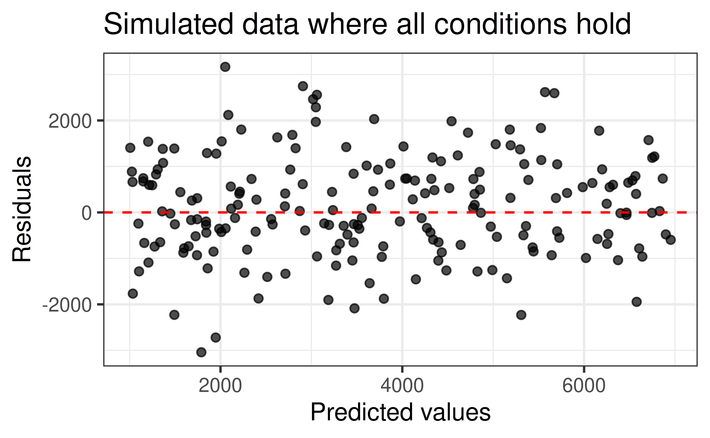
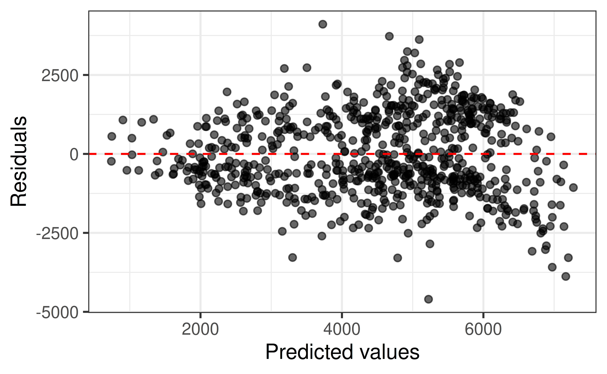
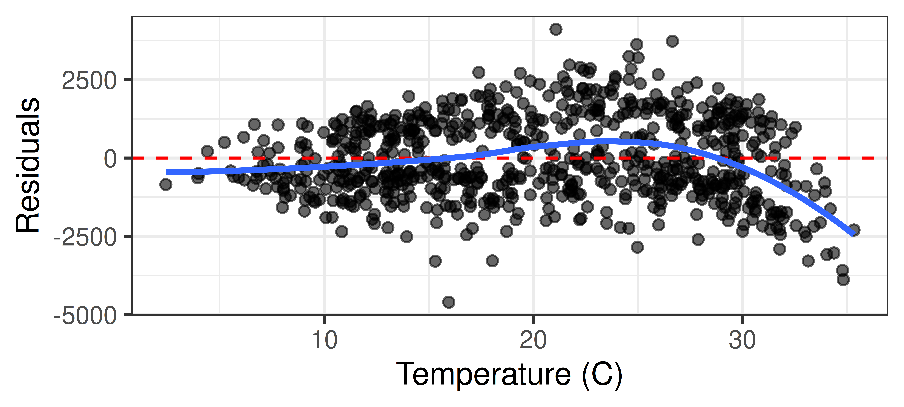
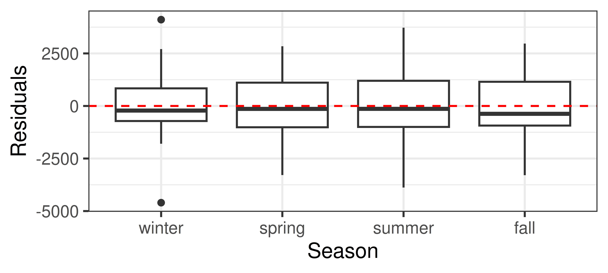
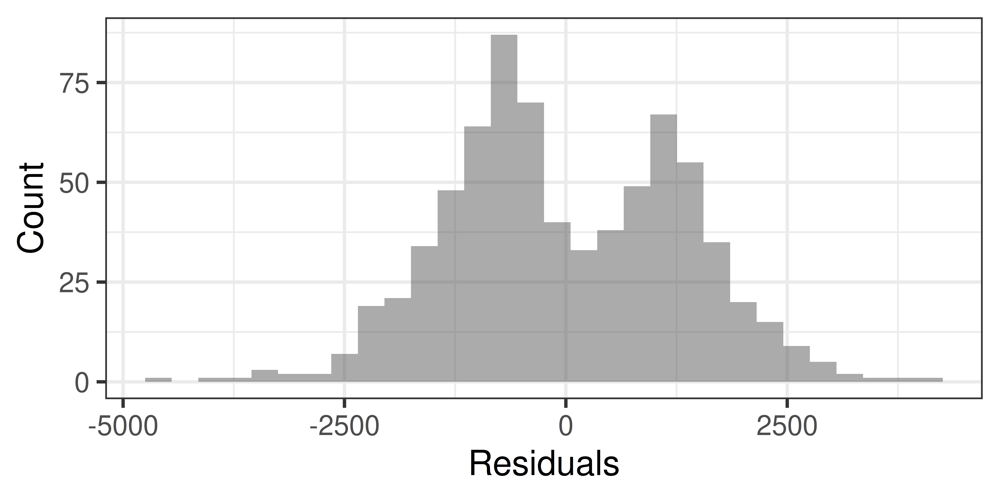
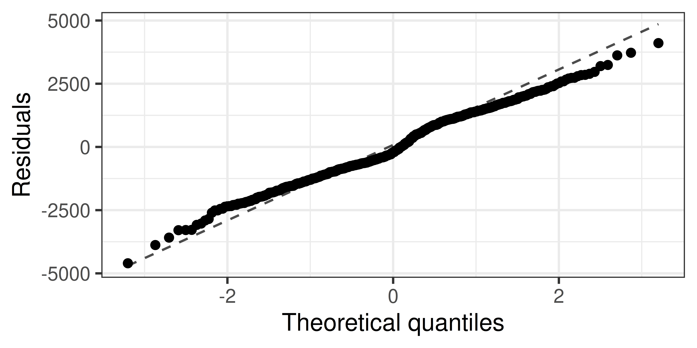
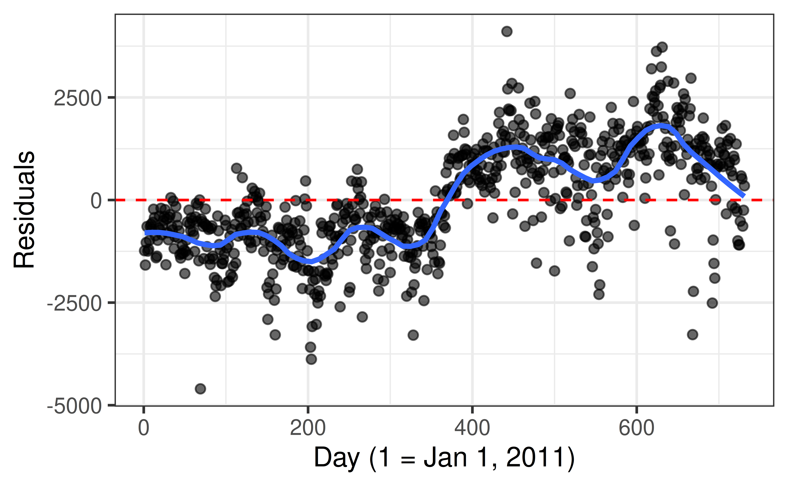
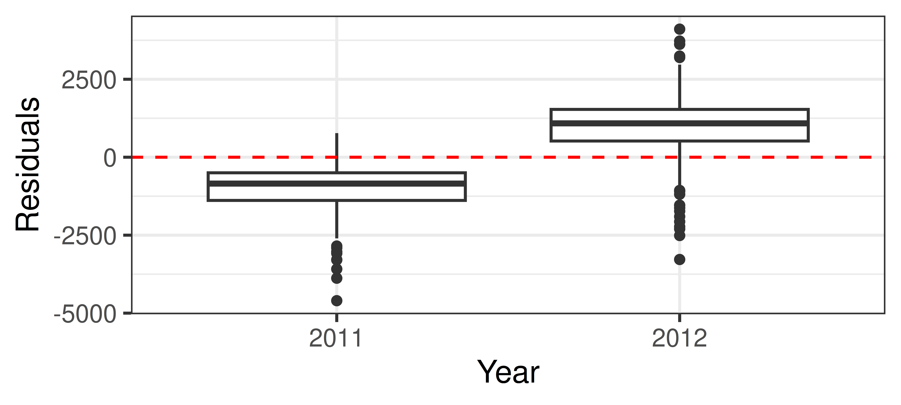
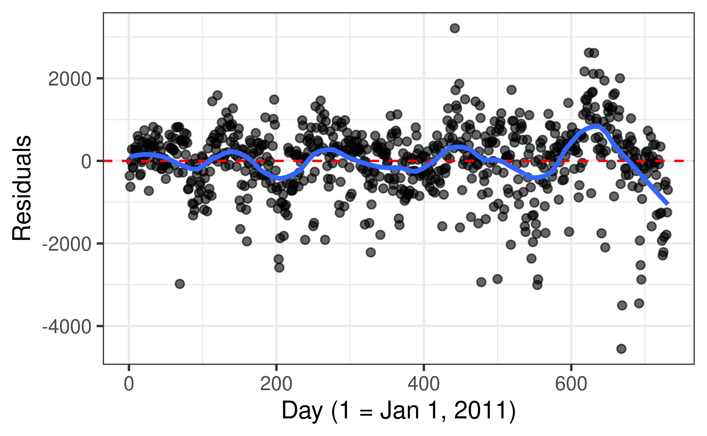

Rows: 731
Columns: 8
$ dteday <date> 2011-01-01, 2011-01-02, 2011-01-03, 2011-01-04, 2011-01-05…
$ count <dbl> 985, 801, 1349, 1562, 1600, 1606, 1510, 959, 822, 1321, 126…
$ temp_orig <dbl> 14.110847, 14.902598, 8.050924, 8.200000, 9.305237, 8.37826…
$ season <fct> winter, winter, winter, winter, winter, winter, winter, win…
$ hum <dbl> 0.805833, 0.696087, 0.437273, 0.590435, 0.436957, 0.518261,…
$ windspeed <dbl> 0.1604460, 0.2485390, 0.2483090, 0.1602960, 0.1869000, 0.08…
$ workingday <fct> Not a working day, Not a working day, Working day, Working …
$ year <fct> 2011, 2011, 2011, 2011, 2011, 2011, 2011, 2011, 2011, 2011,…MLR Conditions
Can we trust the p-values and intervals?
Prof. Eric Friedlander
Topics
- Why we need model conditions
- Checking linearity, constant variance, normality, and independence
- What to do when a condition fails
Where we are
Over the last three lectures we built \(t\)-tests, \(F\)-tests, and confidence intervals for MLR. All of them rely on the same model:
\[y_i = \beta_0 + \beta_1 x_{i1} + \dots + \beta_p x_{ip} + \epsilon_i, \hspace{10mm} \epsilon_i \sim N(0,\sigma_{\epsilon}^2)\]
If the model is a poor description of the data, then the p-values and intervals do not mean what we say they mean.
The four conditions, LINE:
- Linearity: the mean of \(y\) is a linear function of the predictors
- Independence: the errors are independent of each other
- Normality: the errors are normally distributed
- Equal variance: the errors have the same variance everywhere
The conditions are all about the errors \(\epsilon_i\). We never see those. What do we look at instead?
The residuals \(e_i = y_i - \hat{y}_i\), our best stand-in for the errors.
Data: bikeshare
- Daily counts of bike rentals from the Capital Bikeshare system in Washington, DC, for all of 2011 and 2012 (\(n = 731\) days)
- The same data we used in Lectures 17 and 18
The model
We will predict the daily count of rentals from the temperature (in degrees C), season, humidity, wind speed, and whether it was a working day.
| term | estimate | std.error | statistic | p.value |
|---|---|---|---|---|
| (Intercept) | 3663.70 | 329.33 | 11.12 | 0.00 |
| temp_orig | 159.46 | 11.79 | 13.53 | 0.00 |
| seasonspring | 889.83 | 182.35 | 4.88 | 0.00 |
| seasonsummer | 374.92 | 240.15 | 1.56 | 0.12 |
| seasonfall | 1445.12 | 155.28 | 9.31 | 0.00 |
| hum | -3742.12 | 362.71 | -10.32 | 0.00 |
| windspeed | -4224.68 | 669.39 | -6.31 | 0.00 |
| workingdayWorking day | 122.91 | 105.67 | 1.16 | 0.25 |
We could happily read p-values off this table. Should we, before checking conditions?
Linearity
Checking linearity
- Plot the residuals vs. the predicted values
- Plot the residuals vs. every predictor
- Quantitative predictor: scatter plot
- Categorical predictor: side-by-side boxplots
- Linearity is met if there is no discernible pattern: the points scatter randomly around 0
Why do we plot residuals instead of just \(y\) vs. \(x\)?
With several predictors, a scatterplot of \(y\) vs. one \(x_j\) mixes in the effect of every other predictor. The residuals have the other predictors’ effects removed.
What “fine” looks like

Residuals vs. predicted values

Does anything here worry you?
Residuals vs. each predictor

The residuals are positive for mild days (about 15 to 27 C) and then fall off sharply on the hottest days: the curve bends. The linearity condition is not met for temp_orig: a straight line underpredicts rentals on mild days and badly overpredicts them on very hot days.
Equal variance
Checking constant variance
- Look at the residuals vs. predicted values (and vs. each predictor)
- Constant variance is met if the vertical spread is about the same across the whole plot
- Warning sign: a fan or funnel shape, or one group much more spread out than another
Constant variance on bikeshare

| season | sd_resid |
|---|---|
| winter | 1070 |
| spring | 1318 |
| summer | 1502 |
| fall | 1354 |
Winter residuals are noticeably less spread out than summer residuals (about 1,070 vs. 1,500), a ratio of about 1.4. That is a mild violation, not a dramatic fan.
Why might ridership be more variable in the summer than in the winter?
What happens when variance is not constant?
- The coefficient estimates \(\hat\beta_j\) are still fine
- But \(\hat\sigma_\epsilon\) is one number averaged over the whole data, so it is too small in the noisy regions and too big in the quiet ones
- Our standard errors, and so our p-values and intervals, are then wrong: not by a lot if the problem is mild, but badly wrong if it is severe
Options: transform \(y\) (often log(y) for a fan shape), add a predictor that explains the spread, or be upfront that the intervals are approximate.
Normality
How do we evaluate normality?
We only ever look at the residuals, and we use two plots together:
Histogram of the residuals: is it roughly unimodal (one hump), symmetric, and bell-shaped? Watch for two humps, strong skew, or extreme outliers.
Normal QQ plot: each residual (y-axis) is plotted against the value we would expect for that rank if the residuals were perfectly normal (x-axis).
- Points on the line: approximately normal
- Points curving away at the ends: the tails are heavier (points flare away from the line) or lighter (points hug the center) than a normal
- A bow (one side up, the other down): skewed
- An S shape: often a sign of bimodality or light tails
A few rules of thumb:
- Judge the overall pattern, not one or two points at the ends. Perfect lines never happen with real data.
- Your sample size matters: with a larger \(n\), mild departures from normality have little effect on \(t\)-tests and intervals.
- We avoid formal normality tests (like Shapiro-Wilk) for this. With a large \(n\) they reject for tiny, harmless departures, and with a small \(n\) they miss big ones.
Checking normality: histogram

Is this unimodal and symmetric?
What is a QQ plot?
A QQ (quantile-quantile) plot compares the quantiles of our data to the quantiles we would expect if the data were perfectly normal.
How it is built:
- Sort the residuals from smallest to largest. These are the y-values.
- For each position in the sorted list, find the value a perfectly normal sample of the same size would have there (the smallest of 731 values sits near the 0.1th percentile, the median at 0, and so on). These are the x-values, the “theoretical quantiles”.
- Plot each residual against its theoretical value, and add a reference line.
It will look like a straight line if the residuals follow a normal distribution…
The slope reflects the spread of the residuals and the intercept reflects their center, so we do not need to standardize anything: we only look for straightness.
Checking normality: QQ plot

Interpreting the QQ plot
- Points that follow the line: residuals are approximately normal
- Tails that bend away from the line: the tails are heavier (or lighter) than a normal distribution
The histogram is bimodal (two humps, not one), and the QQ plot has an S shape: the tails are lighter than a normal distribution, not heavier. Strictly, the normality condition is not met. (The two humps will turn out to be a clue about something missing from our model.)
We have \(n = 731\). How much should that bother us?
Not much. With a reasonably large sample, the Central Limit Theorem makes \(t\)-tests and intervals for the coefficients robust to non-normal errors. Normality is the least important condition, unless \(n\) is small or you want prediction intervals for one new observation.
Independence
Checking independence
- Independence cannot be read off a plot of the residuals alone. It comes from how the data were collected.
- Ask: could knowing one observation’s error tell me something about another’s?
Common culprits:
- Time order: today’s ridership is probably similar to yesterday’s. Plot the residuals in the order the data were collected.
- Grouping: students in the same class, patients at the same clinic, islanders from the same village
- Spatial closeness
The bikeshare data are 731 consecutive days. Is independence a reasonable assumption? What would you plot to check?
Independence on bikeshare

Long runs of positive residuals followed by long runs of negative ones: a day with a big positive error tends to be followed by another. There is also a clear jump at the start of 2012. The independence condition is not met.
What is lurking in the time order?

Our model has no idea which year it is, and the program grew a lot from 2011 to 2012. Residuals average about \(-1{,}000\) in 2011 and \(+1{,}000\) in 2012. This is also the two-humped histogram from the normality slide.
If we add year to the model, will that fully solve the independence problem?
Independence on bikeshare

It removes the biggest piece (the 2012 effect is about +2,000 rentals per day). But neighboring days are still correlated, for example through weather that lasts for days, so independence is still a concern. Fixing independence usually needs more advanced tools (time series models).
Your project
Think about your Islands study. For each of the four conditions, what is one way it could fail in your data? Which one do you think is the biggest risk?
Hints:
- Independence: how did you sample? Did any islanders share a village, a household, or a survey day?
- Linearity: do you have a quantitative predictor? Does its relationship with the response look straight?
- Equal variance: is one group much more spread out than another?
Which conditions matter most?
Rough ranking
| Condition | What breaks if it fails | How worried to be |
|---|---|---|
| Independence | SEs, p-values, and intervals are wrong, often by a lot | Very |
| Linearity | The model is biased: the wrong shape for the truth | Very |
| Equal variance | SEs, p-values, and intervals are off | Moderate |
| Normality | Matters mainly with small \(n\) and prediction intervals | Least |
No real dataset satisfies the conditions perfectly. The question is not “are they exactly met?” but “are any violations serious enough to change my conclusions?”
Reporting conditions in your paper
A good conditions paragraph:
- names each of the four conditions and the plot you used for each,
- says whether each is reasonably met, with evidence,
- says what you did about any that are not (transform, add a term, or caveat the results).
Activity: start HW 11
📋 HW 11 - Conditions and Multicollinearity
Load the data you have collected so far, fit the model you plan to use in your paper, and work through Part 0 and Part 1 (the four LINE conditions). Part 2 (multicollinearity) comes on Wednesday.
Recap
- Our inference (p-values, \(F\)-tests, intervals) is only trustworthy if the LINE conditions hold
- We check them with the residuals: vs. predicted values, vs. each predictor, a histogram and QQ plot, and by thinking about how the data were collected
- Linearity can be fixed with transformations or polynomial terms, unequal variance with transformations of \(y\)
- Independence comes from study design, so it is hard to fix after the fact
- Normality is the least critical condition when \(n\) is reasonably large
- On the bikeshare data, linearity and independence failed (a curved temperature effect, a missing year effect, and day-to-day dependence), and equal variance was only mildly off